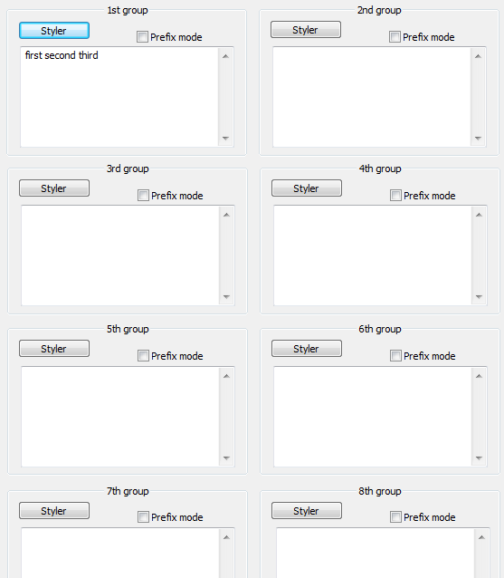

UDL > Keywords
This section describes new options user have when defining keyword lists.

Number of keyword lists has been expanded to eight (as suggested by Don, if more is needed, please state so in discussion on Notepad++ forum). Functionality is the same as in UDL 1.0. You can set “font options” (font type, color, size and so on), and you can turn on “prefix mode”. Prefix mode simply means that anything that starts with your string will be identified as keyword.
But there is something new, an idea that comes from CChris: In UDL 2.0 you can define multi-part keywords. To do it, just put two or more words in quotation marks. e.g “else if”
Double quotes around multi-part keywords
Assuming that “else” and “if” are not defined as separate keywords, multi part keyword “else if” will be recognized as a keyword only if both strings are present. So, else if will be a keyword, but just else, or just if, will be treated as default text. Also note that any number of white space characters might separate “else” and “if”.
All these combinations will be correctly recognized:
else if # one space
else if # three spaces
else\tif # one tab
else\t\tif # two tabs
else\nif # one new line
else\n\nif # two new lines
That’s right, you can even hit Enter in the middle of multi-part keyword and it will still be recognized!
Single quotes around multi-part keywords
Now, what if you want to limit multi-part keywords to be recognized only on the same line? You can do that simply by using single quotes instead of double quotes. So, if you define “else if”, than “else” and “if” can be separated by any number of spaces and tabs, but not new lines. This is important if you are defining multi-part keywords that are embedded (nested) in line comments.
Prefix mode
Prefix mode for multi-part keywords simply means “next word” will be highlighted too.
This page of the User Manual is derived and edited from Ivan Radić's udl-documentation, which he has maintained for Notepad++'s UDL 2.1 since 2015, under the CC BY 4.0 license.